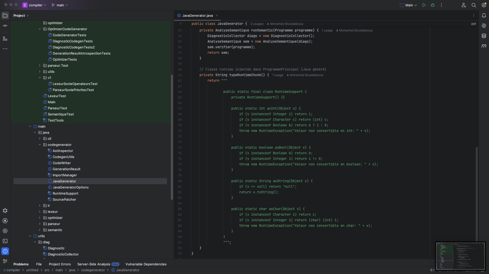

Conversion AST → IR → Java
Le projet sépare clairement les responsabilités : l’AST décrit le programme source, l’IR simplifie la manipulation interne, puis le générateur produit du Java compilable.
- Conversion structurée avec AstVersIr.
- Génération Java avec IrVersJava et JavaGenerator.
-
Support de fonctions comme
lire()avec injection du runtime Java. - Tests Maven/JUnit pour valider le modèle IR et la génération.

